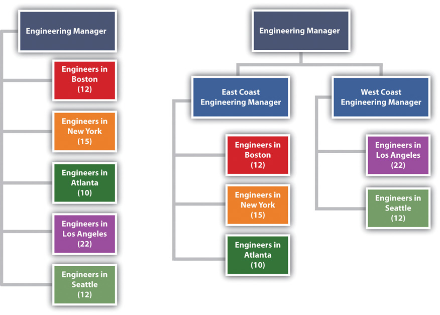
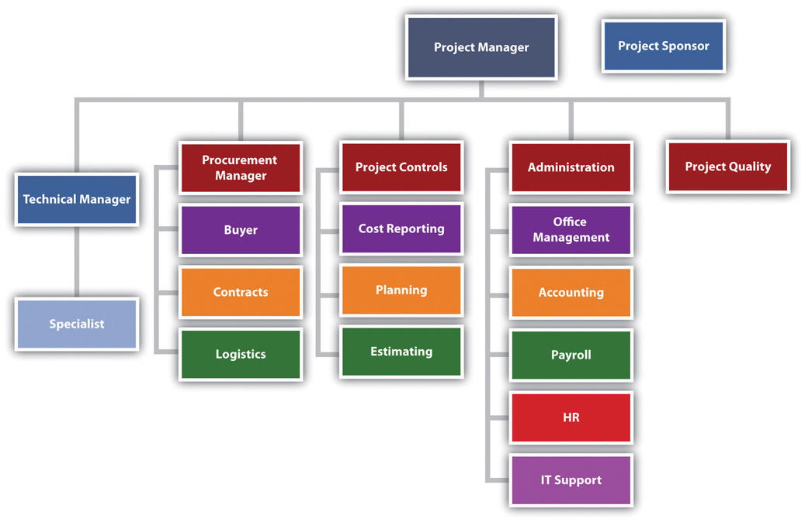
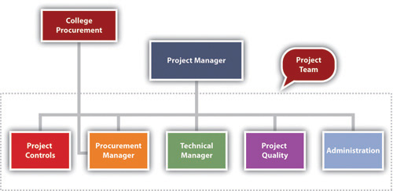
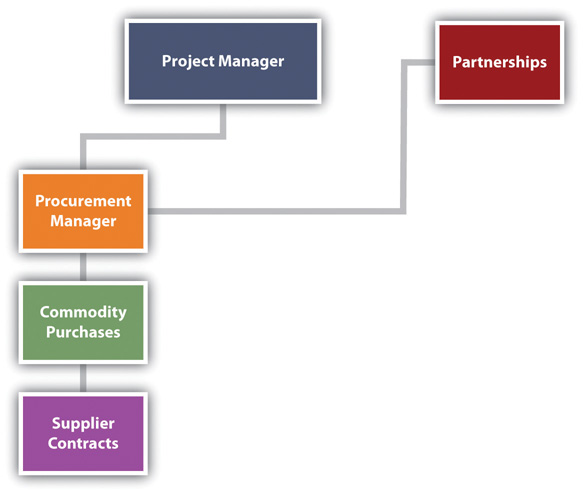
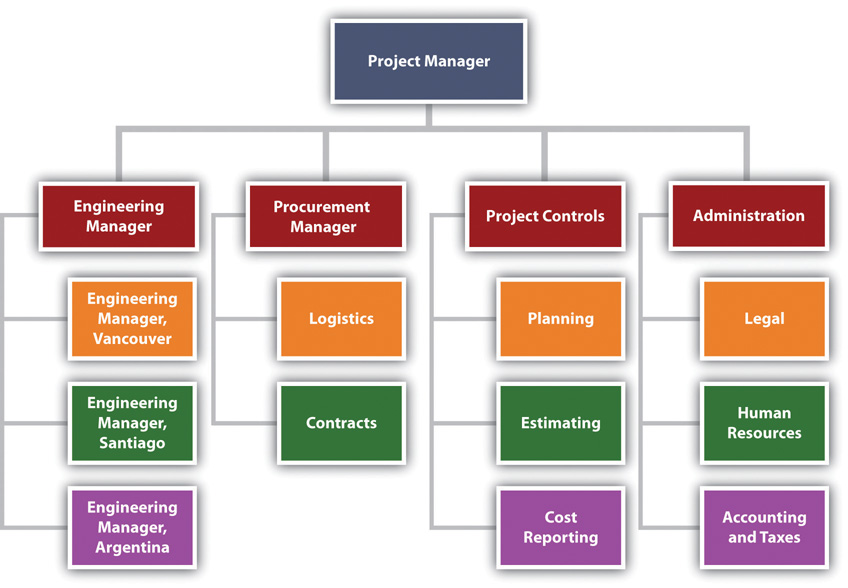

There is no single organizational approach to projects. Each project is organized to accomplish the work effectively and efficiently. Several factors influence the organizational approach to execute a project. The complexity profile of a project, the culture of the parent organization, the preferences of the project manager, the knowledge and skills of the team, and a parent organization with a project management office are examples of factors that influence the project’s organization.
In developing the project organizational structure, the project manager considers the span of controlThe number of people reporting to a manager. for each manager. The span of control represents the number of people reporting to a manager. For example, the project manager does not want all the engineers on a project reporting to the engineering manager and assigns senior engineers to report to the engineering manager with other engineers reporting to the senior engineers.
The engineering manager can organize the engineering reporting structure so that the various engineering discipline managers would report to him or her. For example, the structural, electrical, and mechanical engineering team leaders would report to the engineer manager. On a larger, more complex project, the engineer manager may establish area team leaders and have the structural, electrical, and mechanical engineers report to an area team leader. If the project is geographically dispersed, with the engineering office staff in different cities working on the project, then structuring the engineering function by area provides better coordination and control (see Figure 3.1 "Decreasing Span of Control by Increasing Levels of Reporting").
Figure 3.1 Decreasing Span of Control by Increasing Levels of Reporting
The organization on the left has seventy-one engineers reporting to the same person. The organization on the right creates two additional positions and reduces the span of control to thirty-seven and thirty-four, respectively.
Most projects have similar functions that are important to successfully managing the project. Included among these are the following:
Figure 3.2 Typical Project Organization
On smaller projects, more than one function can be managed by one person. On larger projects, large teams may be needed to accomplish the work within the function.
The project sponsor is outside the day-to-day operations of the project and has the organizational authority to provide resources and overcome barriers for the project. The project sponsor is typically a leader in the parent organization with an interest in the outcome of the project. As a leader in the parent organization, the project sponsor can provide input into the project scope and other documents that define project success. The guidance and support from the project sponsor enhances the ability of the project to successfully meet the parent organization’s objectives.
A training organization in South Carolina assigned a project sponsor to every project. For smaller projects, the regional manager fulfilled the role of project sponsor. On larger, more complex projects, the operations manager was the project sponsor. The vice president was the project sponsor of the three or four most complex projects, and the president was the project sponsor only on projects with a high degree of political risk. This approach to assigning project sponsors assured that each project had an organizational advocate that could address barriers and provide direction and resources. The project sponsor, in this organization, developed a relationship with a senior representative of the client organization, reviewed monthly reports, and conducted thorough quarterly reviews.
Project managers often have the breadth of responsibility associated with corporate chief executive officers (CEOs). The project manager facilitates the start-up of a project and develops the staff, resources, and work processes to accomplish the work of the project. He or she manages the project effectively and efficiently and oversees the closeout phase. Some projects are larger than major divisions of some organizations, with the project manager responsible for a larger budget and managing more risk than most of the organizational leaders. A mining company that builds a new mine in South Africa, an automobile manufacturer that creates a new truck design, and a pharmaceutical company that moves a new drug from testing to production are examples of projects that may consume more resources in a given year than any of the organization’s operating divisions.
The function of the project manager can vary depending on the complexity profile and the organizational structure. Defining and managing client expectations and start-up activities, developing the scope, and managing change are functions of the project manager. On some projects, the project manager may provide direction to the technical team on the project. On other projects, the technical leadership might come from the technical division of the parent organization.
Although the functional responsibilities of the project manager may vary, the primary role is consistent on every project. The primary role of the project manager is to lead, to provide a vision of success, to connect everyone involved in the project to that vision, and to provide the means and methods to achieve success. The project manager creates a goal-directed and time-focused project culture. The project manager provides leadership.
In general, project controlsPlanning function and the function that tracks progress against the plan. is both the planning function and the function that tracks progress against the plan. Project control provides critical information to all the other functions of the project and works closely with the project manager to evaluate the cost and scheduling impact of various options during the life of a project.
Sometimes accounting functions such as payroll, budgeting, and cash management are included within project controls. On larger projects, accounting functions are typically separate because the accounting culture tracks expenses to the nearest penny, and cost estimating and tracking by project controls can often be off by hundreds and sometimes thousands of dollars. The lack of definitive information necessitates the development of cost estimates within ranges that are often inconsistent with accounting practices. Separating these two functions allows each to operate within their own accuracy comfort zone. The following are typical activities included within the project controls function:
The project controls team gathers this information from all the functions on the project and develops reports that enable each functional manager to understand the project plan and progress against the plan at both the project level and the functional level. On large complex projects, some project managers will assign project controls professionals to work within the major functions as well as the project management office. This approach allows each function to plan and track the function’s work in more detail. The project controls manager then coordinates activities across functions.
The approach to purchasing the supplies and equipment needed by the project is related to the complexity profile of the project. A small project with a low complexity level may be able to use the procurement services of the parent organization. In an organization where project resources reside in various departments, the departments may provide the supplies and equipment each team member of the project may need.
A college in South Carolina chartered a number of projects to increase the energy efficiency of the college. The project team included members from various college departments. Each department paid for the time, travel expenses, and supplies needed by the team member from their department. Each team member continued to use the computers and administrative support in their department for project work. The costs for this support was not included in the project budget nor tracked as a project expense. Equipment purchased by the project that was installed to reduce the energy consumption of the college was purchased through the college procurement department and charged to the project.
More complex projects with greater procurement activity may have a procurement person assigned to the project. This same South Carolina college retrofitted a warehouse to create a new training center for industry. A procurement person was assigned to the project to manage the contract with the construction firm remodeling the space, the purchase and installation of the new training equipment, and the purchase of the supplies needed by the project team. All the procurement activity was charged to the project. The procurement person reported to the project manager for better communication on what the project needed and when it needed it. The procurement person participated as a member of the project team to understand and provide input into the costs and scheduling decisions. The procurement person reported to the college procurement manager for developing and implementing project procurement processes that met college procurement policies and procedures.
Figure 3.3
The procurement manager is part of the project team.
On larger, more complex projects, the procurement team has several responsibilities. The team is responsible for procuring the supplies and equipment (such as office supplies and computers) needed for the project team and the supplies and equipment (such as the training equipment) needed to execute the project. On a typical construction project, the procurement team would rent a construction trailer, office supplies, and computers for the project team to establish a construction office at the construction site. The procurement team would also purchase the concrete, rebar, steel, and other material needed to construct the building.
On the large mining project in South America, during the initiation phase of the project, the procurement department arranged for office space and supplies for the engineering teams in Canada, Chile, and Argentina and construction offices at the construction site in Argentina. As the design and engineering progressed, the procurement team managed bids for the major equipment and bids for the preparation of the construction site. The procurement team managed the logistics associated with transporting large equipment from Europe, North America, and Asia to the job site in rural Argentina. After the completion of the project, the procurement team managed the deposal of project property.
On large, complex projects, the procurement team manages at least three types of relationships with companies doing business with the project.
The largest number of purchased items for most projects are commodity items. Commodities are items that can be bought off the shelf with no special modification for the project. These items are typically bid and the lowest prices that can meet the schedule of the project will win the contract. The procurement team assures the company that wins the bid can perform to the contact specifications and then monitors the progress of the company in meeting the projects requirements. Concrete for the project and the cranes leased to the project are examples of commodities. The key to success in managing commodity suppliers is the process for developing the bids and evaluating and awarding the contracts.
The second type of relationship is the vendor relationship. The terms supplier and vendor are often used interchangeably. In this text, suppliers provide commodities, and vendors provide custom services or goods. Suppliers bid on specialized equipment for the project. Engineers will specify the performance requirements of the equipment, and suppliers that have equipment that meets the requirements will bid on the project. The engineering team will assist in the evaluation of the bids to assure compliance with specifications. The lowest bid may not win the contract. Sometimes the long-term maintenance costs and reliability of the equipment may indicate a high price for the equipment. The key to success is the development of clear performance specifications, good communication with potential bidders to allow bidders to develop innovative concepts for meeting the performance requirements, and a bidding process that focuses on the goals of the project.
The third type of project procurement relationship is the partnership. Sometimes the partnership is legally defined as a partnership, and sometimes the success of each partner is so closely tied together that the relationship operates as a partnership. On the South American project, the project team partnered with an Argentinean construction company to access the local construction practices and relationship with local vendors. This was a legal partnership with shared profits. The partner also designed and procured some large mining equipment on which the success of the project and the company building the mining equipment depended. With this type of relationship, a senior manager on the project is assigned to coordinate activities with the partner, and processes are put in place to develop shared goals, align work processes, and manage change.
Figure 3.4 Procurement Manager Relationships
The technical management on the project is the management of the technology inherent in the project—not the technology used by the team to manage the project. The technical complexity on a project can vary significantly. The technological challenges required to build a bridge to span a five-hundred-meter canyon are significantly different from those required to span a five-thousand-meter body of water. The technological complexity of the project will influence the organizational approach to the project. The technological complexity for a project reflects two aspects: the newness of the technology and the team’s familiarity with the technology. The newness refers to the degree to which the technology has been accepted in the industry. The more accepted the technology is in the industry usually means that more knowledge and experience will be available to the team. Familiarity refers to the experience the project team has with the technology. The less familiarity the team has with the technology, the more energy and resources the team will expend on managing the technological aspect of the project. For projects with high levels of project technology, a specialist may be hired to advise the technology manager.
A steel company in Indiana purchased a new coal injection technology that would improve the quality of steel, reduce the cost to produce the steel, and reduce air and water pollution. The contract to design and construct the new plant was awarded to an engineering and construction company. No one on the engineering and construction team had experience with the coal injection technology. The client’s team understood the technology and provided guidance to both the project engineering and construction teams. The client owned the coal injection technology, and the engineering and construction team brought the project management technology.
Project quality is often part of the technical manager’s responsibility. On large projects or projects with a high degree of technical complexity, the quality is sometimes a separate function reporting to the project manager. The project quality manager focuses on the quality of the project work processes and not the quality of the client’s product. For example, if the project is to design and construct an automobile factory, the quality manager focuses on the project work processes and meeting the technical specification of the equipment installed by the project team. The project quality manager is not responsible for the quality of the car the plant produces. If the plant functions to the defined project specifications, the quality of the plant output is the responsibility of the plant quality department, and it may take several months for the plant to refine the work processes to meet the design specifications of the car.
On a construction project, the quality manager may test steel welders to assure the welders have the skills and that the welds meet project specifications. On a training project, the quality manager may review the training curriculum and the qualification of the instructors to assure the training provides the knowledge and skills specified by the client. On a drug development project, the quality manager may develop processes to assure the water and other raw material meet specifications and every process in the development process is properly documented.
The administrative function provides project specific support such as the following:
In most organizations, support for these functions is provided by the parent organization. For example, people assigned to the project will get human resources (HR) support from the HR department of the parent organization. Salary, benefits, and HR policies for employees assigned to the project will be supported out of the HR department. The parent organization will provide accounting functions such as determining the cost of cash, taxes, year-end project reports, and property disposal at the end of the project.
The project manager on smaller, less complex projects will have sufficient knowledge about these issues to coordinate with the parent organization’s functional leaders. On more complex projects, the project may have an administrative manager responsible for coordinating the administrative functions of the projects. On larger, more complex projects, an administrative function may be established as part of the project team, with many of the functions assigning a resource to the project. In all cases, the administrative function on a project is closely related to the legal and organizational responsibilities of the parent organization and close coordination is important.
The South American mine project has major design work to accomplish in three different design offices: Vancouver, Santiago, and Argentina. The project manager and the leadership team reside in Santiago, Chile. During the design stage of the project, the engineering manager in each engineering office is leading the work with project controls, procurement, and administration, each assigning resources to support the engineering activities at each location. The project engineer manager assigned the engineering work based on the capabilities of the office and coordinates the work between offices. The procurement, project controls, and administrative leaders assign resources to support the work in each office. For example, the project controls manager assigned a planner in each office to support the engineering manager in that office to develop and track the schedule. The project planner in Vancouver supports the development of the engineering schedule in Vancouver and communicates and coordinates with the planning activities in the other locations
When the project construction activities started, project controls, procurement, and administrative resources moved from supporting engineering to supporting the construction activity. The project organizational structure changed as the engineering manager and the engineering effort changed from primarily designing the project to supporting the construction effort, by answering construction questions and developing solutions to construction challenges. The procurement effort changes from managing the bidding and contracting activities to managing the logistics.
Figure 3.5 Organization for Major International Project
Project Organization
Refer to the descriptions of the project functions and determine which manager would take care of each of the following problems. If you think the problem requires the attention of more than one function, explain why.